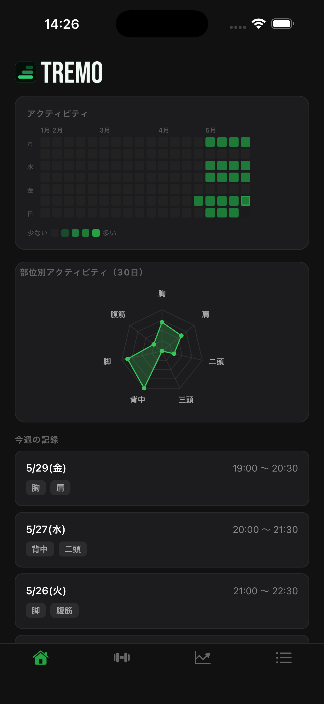
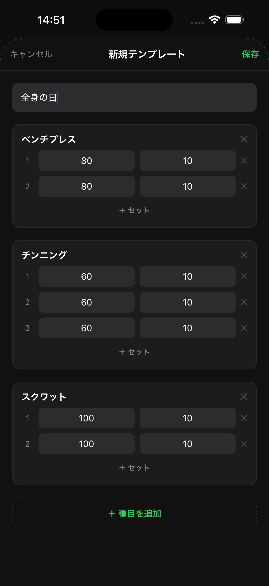
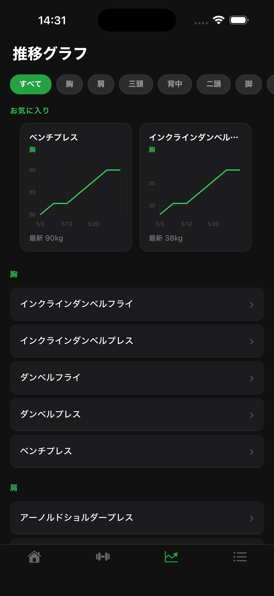
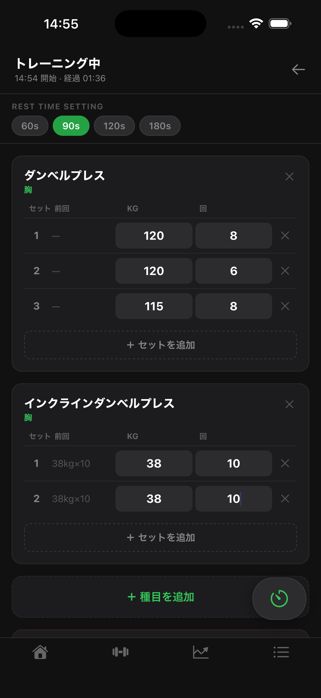

主な機能

アクティビティ
ヒートマップやチャートで日々のトレーニング記録を確認

テンプレート
あなただけのトレーニングメニューを保存

推移グラフ
種目ごとの重量推移を折れ線グラフで確認

ワークアウト記録
トレーニングの種目、重量、回数を記録
よくある質問
- データはどこに保存されますか？
- すべてのデータはデバイス内にのみ保存されます。外部サーバーへの送信は行っていません。
- アカウント登録は必要ですか？
- 不要です。個人情報の登録なしにすぐご利用いただけます。
- データのバックアップはできますか？
- 現在非対応です。アンインストールするとデータが失われますのでご注意ください。
- プッシュ通知は何に使われますか？
- 休憩タイマーの終了通知のみに使用します。マーケティング通知は送信しません。
お問い合わせ
バグ報告・ご要望は otakekub@gmail.com までお気軽にどうぞ。